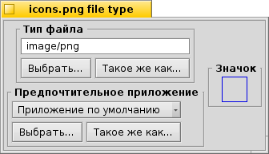
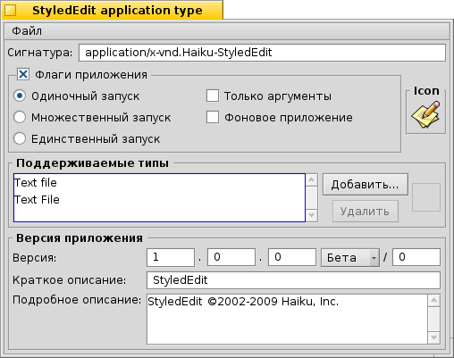

Русский
Русский Français
Français Deutsch
Deutsch Italiano
Italiano Español
Español Svenska
Svenska 日本語
日本語 Українська
Українська 中文 ［中文］
中文 ［中文］ Português
Português Suomi
Suomi Slovenčina
Slovenčina English
EnglishТипы файлов
В отличие от Windows, Haiku не определяет тип файла по 3-м буквам расширения (например: .txt, .jpg, .mp3). Этот метод является лишь запасным выходом. Haiku использует MIME типы, как это принято в Интернете. (примечание: MIME - Multipurpose Internet Mail Extension — многоцелевые расширения почты интернета, произносится как «майм»).
 Настройки типа для определенного файла
Настройки типа для определенного файла
Вы можете сменить тип любого файла, его иконку и приложение, которое с ним ассоциируется. Выделите файл, вызовите контекстное меню при помощи правого щелчка мышью и выберите .

Тип файла
В нашем случае это PNG-файл, его MIME-строка image/png. Давайте представим, что вы точно знаете, что это не PNG-файл, а GIF-файл. Вы можете изменить его тип, изменив MIME-строку вручную, либо при помощи любой из двух кнопок расположенных ниже:
| Показать окно со списком типов файлов, в котором следует выбрать image | GIF Image. | ||
| Открыть диалог, в котором вы можете выбрать файл с типом, который вам нужен. |
Предпочтительное приложение
Это ниспадающее меню отображает список всех приложений, которые могут открыть файл определенного типа. Здесь вы можете выбрать приложение, которое должно открывать файл. Например, вы можете изменить предпочтительное приложение для HTML-файла с браузера на текстовый редактор, пока вы над ним работаете. Однако любой другой HTML-файл будет открываться в браузере.
устанавливается глобально для каждого тип файла. Если вы не нашли приложение, которое хотите ассоциировать с этим файлом, в ниспадающем меню, вы можете воспользоваться кнопками и , которые выполняют аналогичные функции, которые описаны выше (см. "Тип файла").
Иконка
Не стоит удивляться тому, что место в правом верхнем углу для иконки пустое, т.к. иконки по умолчанию наследуются от системных типов файлов. Вы можете открыть файл, содержащий иконку, при помощи дополнения Тип файла (Filetype add-on) и перетащить эту иконку на ваш файл. Также можно дважды щелкнуть по области иконки и создать свою, либо изменить иконку. Для более подробного изучения информации о создании иконок обратитесь к теме Icon-O-Matic.
Индивидуальная настройка приложений
Если вы вызовите дополнение Тип файла для приложения (мы рассмотрим: Стильный редактор), то вы увидите следующее окно:
Сверху вместо стандартной MIME-строки вы увидите уникальную сигнатуру приложения. С её помощью система находит приложение, где бы оно ни было установлено.
Ниже расположены настройки поведения приложения:
| Только один экземпляр приложения может быть запущен из исполняемого файла. Однако если вы имеете две копии приложения, они будут работать бок о бок. | ||
| Одновременно может быть запущено несколько экземпляров приложения. | ||
| Может быть запущен только один экземпляр приложения с данной сигнатурой | ||
| Указать приложению не отвечать на сообщения. | ||
| Приложение не будет отображаться в Twitcher и списке запущенных приложений в Deskbar. |
Ещё ниже расположен список поддерживаемых файлов. Вы можете добавлять (или удалять) типы файлов, если вы думаете, что приложение сможет открыть их. Как следствие, приложение появится в меню предпочтительного приложения, либо в контекстном меню Tracker , которое вызывается правым щелчком мыши по файлу.
В самом низу отображается информация о версии приложения и авторских правах. Как и сигнатура приложения, эта информация заполняется автором приложения и должна оставаться неизменной.
Глобальные настройки типов файла
Панель настройки Типы файлов никак не связана настройкой отдельных файлов, она позволяет управлять глобальными настройками типов файлов. Вы можете изменить стандартную иконку, предпочтительное приложение или добавить, удалить, либо изменить атрибуты для всех файлов определенного типа. Вы даже можете создать свой собственный тип файла с нуля.
Все типы файлов и их настройки хранятся по адресу /boot/home/config/settings/beos_mime/. Перед тем, как вы начнете экспериментировать, было бы разумно сделать резервную копию этой папки...
Для более подробного изучения панели настройки Типы файлов (FileTypes) обратитесь к теме: Семинар на тему: типы файлов, атрибуты, индексация и запросы..